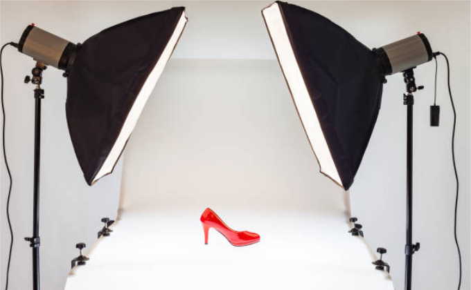

Abadikan Momentmu Dengan Gambar
Feb 12, 2007Views : 3,487,497

Persiapan utama bukan Kamera, Lensa, atau tools yang lain. Hal pertama yang Anda perlukan adalah mengeksplorasi destinasi yang akan Anda kunjungi
terutama jika belum pernah kesana sebelumnya. Dengan mengeksplorasi destinasi yang akan Anda kunjungi, Anda akan tahu tempat-tempat mana saja yang bisa Anda tuju,
kapan waktu terbaik untuk ke masing-masing spot, dan yang tidak kalah penting, Peralatan apa yang harus dibawa. Bagaimana cara mengeksplorasinya?
gunakan Google Search dan Google Image.
Sudah menentukan mana saja tempat yang akan dituju? Nah, sekarang waktunya menyusun rencana perjalanan atau biasa disebut Itinerary. Kelompokkan destinasi-destinasi
yang berdekatan. Susun rute yang terarah dari satu tempat ke tempat lain dengan berurutan dan tidak bolak-balik.
Prinsip utama dalam travel photography adalah semakin ringkas semakin maksimal. Kenapa harus ringkas? Karena sesuai dengan skenario, kita akan berjalan kurang lebih 15km.
Bayangkan kalau berjalan sejauh itu dengan membawa banyak barang (misal 9kg). Sanggup? Mungkin saja. Tapi dalam meng-capture moment, dibutuhkan ketenangan, pikiran yang jernih
dan cukup energi. Sehingga semakin merasa berat dengan barang bawaan, semakin merasa lelah, dan hasil semakin tidak maksimal.
Jika daftar peralatan yang akan dibawa sudah ada, langsung tentukan tanggal untuk packing atau mengemas semua perlengkapan tersebut agar nanti jika ternyata ingin
menambahkan barang yang belum ada di list awal masih ada cukup waktu. Pisahkan tas kamera dengan tas utama sehingga kamera bisa diambil sewaktu-waktu ketika
ada moment penting.